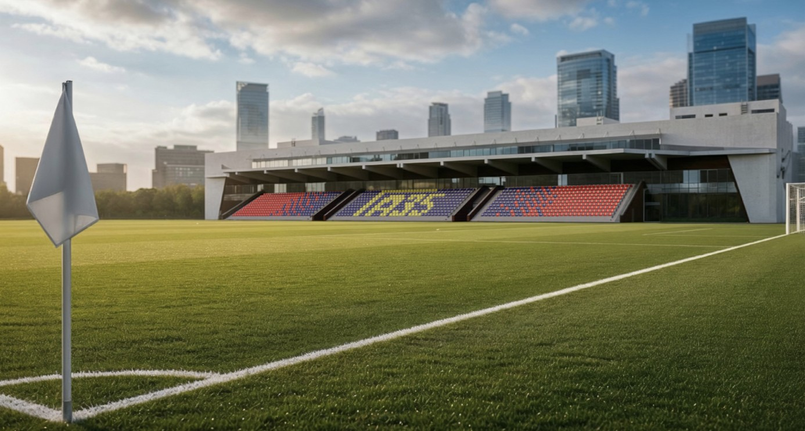
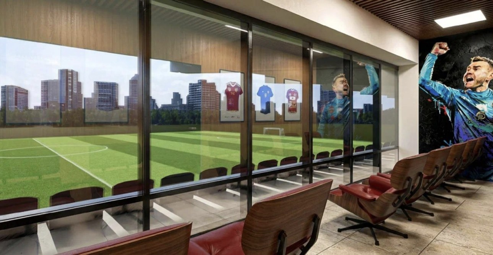
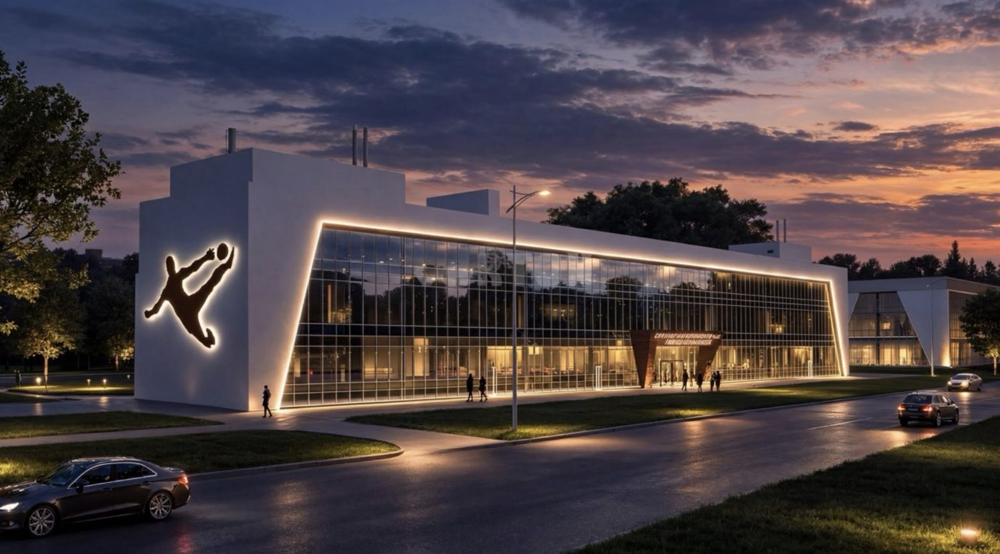

Игровая практика
Дополнительная игровая практика для молодых игроков.

Часть 2 · Турнир · 2027
Международный футбольный турнир — официальное спортивное соревнование: российский этап и международный этап (Гран-при).
Официальный статус
Турнир включён в Перечень официальных спортивных соревнований, проводимых по правилам, разработанным спортивными организациями.
Приказ Министерства спорта Российской Федерации от 29 декабря 2025 г. № 1251
Правила проведения соревнований, разработанные Фондом «Страна Футбола», утверждены приказом Министерства спорта РФ от 22 апреля 2026 г. № 352.
Согласно регламенту соревнований турнир состоит из двух этапов: российского и международного.
Этапы
Молодёжные команды Москвы и Московской области — участники молодёжного чемпионата России.
Четыре лучшие команды в полуфиналах определяют финальную пару — на новейшем стадионе в Реутове — домашней арене кипербола, где расположена Академия Игоря Акинфеева А35.
Финалисты российского этапа и приглашённые зарубежные молодёжные команды. Даты согласуются дополнительно.
Зачем участвовать
Дополнительная игровая практика для молодых игроков.
Для игроков — шанс заявить о себе, раскрыть свои способности в играх с сильными соперниками.
Для тренеров — просмотр игроков и работа над их развитием, дополнительные возможности для опробования новых игровых схем и тактических приёмов.
Популяризация молодёжного футбола и повышение внимания к молодёжному чемпионату России.
Возможность участия в международных матчах на международном этапе.
Участники 2027
Молодёжные команды профессиональных футбольных клубов Москвы и Московской области — участники молодёжного чемпионата России (группы А и Б).
Российский этап
Домашняя арена кипербола
Все матчи турнира, а не только финал, проходят на новейшем стадионе в Реутове с отличной инфраструктурой и прекрасным расположением. Это домашняя арена кипербола: на нём расположена Академия Игоря Акинфеева А35. Реутов и Академия — центр развития кипербола, российского формата футбола и своего рода импортозамещения в спорте.
Академия располагает всей необходимой инфраструктурой для проведения футбольных матчей высокого уровня: полноразмерным футбольным полем, сертифицированным по требованиям РФС, трибунами на 1000 мест, комфортабельными раздевалками, медицинским кабинетом и др.
Это выгодно командам: организация матчей ложится на организатора. Местоположение академии рядом с МКАД обеспечивает быструю транспортную доступность из любой точки Москвы и области — станция Реутово (МЦД-4) в 1 км, метро «Новокосино» в 2 км.



Время в пути — на машине, без пробок (OpenStreetMap). Для команд — от стадиона, где молодёжная команда играла домашние матчи в 2026 году; ссылка открывает маршрут в Яндекс Картах.
Международный этап
Награды
Российский этап
Награждается команда-победитель российского этапа турнира.
Международный этап
Награждается команда-победитель международного этапа.